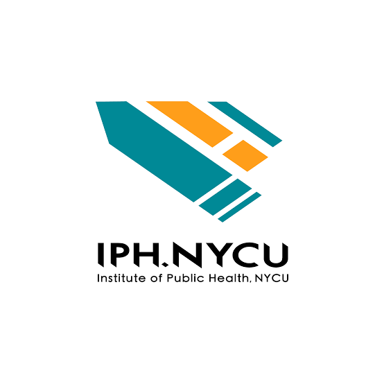
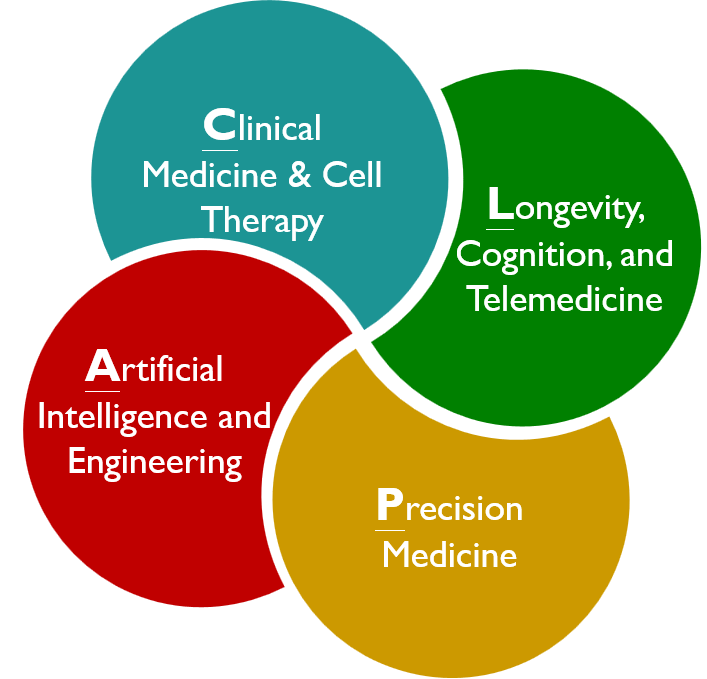

01
健康長壽與老年醫學
Healthy Longevity & Geroscience
老化科學、健康餘命與精準老年醫學
以健康長壽為核心的照護
第六屆國際健康管理暨 TPMIC 研究成果發表會，串聯臨床醫療、公共衛生與學術研究，透過國際專題、研究短講及海報交流，共同探索延長健康餘命的新方向。
Healthy Longevity & Geroscience
老化科學、健康餘命與精準老年醫學
Brain Health & Dementia Prevention
認知健康、失智預防與照護新知
Lifestyle & Longevity Medicine
以生活介入延長健康餘命
Precision Medicine & Health Management
生物標記、醫學影像與個人化管理
已取得正式照片與履歷者依主辦單位現有資料呈現，其餘資訊將持續更新。

Co-Founder and Director, NUS Academy for Healthy Longevity
Oon Chiew Seng Professor in Medicine, National University of Singapore
Professor of Gerontology, Vrije Universiteit Amsterdam
Andrea Britta Maier 教授現任新加坡國立大學健康長壽學院共同創辦人暨院長、Oon Chiew Seng 醫學講座教授、荷蘭阿姆斯特丹自由大學老年學教授，以及澳洲墨爾本大學醫學與老年照護榮譽教授。
Professor Andrea Britta Maier is Co-Founder and Director of the NUS Academy for Healthy Longevity, Oon Chiew Seng Professor in Medicine at the National University of Singapore, Professor of Gerontology at Vrije Universiteit Amsterdam, and Honorary Professor of Medicine and Aged Care at the University of Melbourne.
2003年取得德國呂北克大學醫學學位，2008年獲荷蘭萊頓大學醫學中心博士學位，2009年取得荷蘭老年醫學專科資格；2016至2021年間曾任 Royal Melbourne Hospital 部門主任及墨爾本大學教授。
She received her medical degree from the University of Lübeck in 2003 and her Ph.D. from Leiden University Medical Center in 2008, and qualified as a geriatrician in the Netherlands in 2009. From 2016 to 2021, she held leadership and professorial roles at the Royal Melbourne Hospital and the University of Melbourne.
研究聚焦精準老年醫學、肌少症、細胞老化、健康壽命延展及老化科學臨床試驗，致力將老化生物學轉譯為個人化、生物標記導向的臨床介入策略。
Her research focuses on precision geromedicine, sarcopenia, cellular senescence, healthspan extension, and geroscience clinical trials, translating ageing biology into personalized, biomarker-guided interventions.
現任健康長壽醫學會創會會長，2022年共同創辦 Chi Longevity；深耕老化科學逾25年，已發表逾500篇同儕審查論文，並參與WHO「聯合國健康老化十年」相關評估工作。2026年入選《TIME》「Longevity Leaders 2026」，為全球12位獲選代表人物之一。
She is Founding President of the Healthy Longevity Medicine Society and co-founded Chi Longevity in 2022. With more than 25 years in ageing research and over 500 peer-reviewed publications, she has contributed to WHO-related work for the UN Decade of Healthy Ageing. In 2026, she was named one of the 12 TIME Longevity Leaders.

Director, Memory Aging & Cognition Centre, National University Health System
Professor, Department of Pharmacology, Yong Loo Lin School of Medicine, National University of Singapore
Senior Consultant Neurologist, National University Hospital
Christopher Chen 教授現任新加坡國立大學醫療體系記憶老化與認知中心主任、新加坡國立大學楊潞齡醫學院藥理學系教授，並為新加坡國立大學醫院內科部資深顧問醫師（神經科專科）。
Professor Christopher Chen is Director of the Memory Aging & Cognition Centre at the National University Health System, Professor of Pharmacology at the NUS Yong Loo Lin School of Medicine, and Senior Consultant Neurologist at the National University Hospital.
1982年取得英國劍橋大學自然科學學士，1985年獲牛津大學臨床醫學學位；其後取得英國皇家內科醫學院會員資格，並獲新加坡醫學科學院神經科專科院士及愛丁堡皇家內科醫學院院士資格。
He earned a degree in Natural Sciences from the University of Cambridge in 1982 and his BM BCh from the University of Oxford in 1985. He later obtained MRCP, FAMS in Neurology, and Fellowship of the Royal College of Physicians of Edinburgh.
研究聚焦血管性認知障礙、腦小血管疾病、失智症預防與早期偵測、腦中風後認知追蹤，以及神經影像、血液與視網膜等多模態生物標記整合。
His research focuses on vascular cognitive impairment, cerebral small vessel disease, dementia prevention and early detection, post-stroke cognition, and multimodal imaging, blood, and retinal biomarkers.
長期參與國際失智症、腦中風與腦健康研究合作，擔任多本國際期刊編輯委員，並持續獲新加坡國家醫學研究委員會大型研究獎助。迄今已發表逾500篇學術論文及書籍專章，積極投入研究人才培育。
He contributes to international research and professional initiatives in dementia, stroke, and brain health, serves on the editorial boards of leading journals, and has received major competitive awards from Singapore’s National Medical Research Council. He has published more than 500 papers and book chapters and actively mentors research trainees.

Professor Emeritus, Department of Neurology, Seoul National University College of Medicine
Research Professor, Seoul National University Bundang Hospital
SangYun Kim 教授長期投入神經退化疾病與失智症研究，聚焦阿茲海默症照護及腦健康。
Professor SangYun Kim has long studied neurodegenerative diseases and dementia, with a focus on Alzheimer's disease care and brain health.
1985 年取得醫學學位，1998 年取得博士學位；現任首爾國立大學醫學院神經學名譽教授及首爾國立大學盆唐醫院研究教授。
He earned his medical degree in 1985 and his Ph.D. in 1998. He is Professor Emeritus of Neurology at Seoul National University College of Medicine and a Research Professor at Seoul National University Bundang Hospital.
現任多家生技公司的資深科學顧問，並曾任韓國失智症協會及韓國老年醫學會榮譽會長；自 2003 年起帶領 Alzheimer’s disease all marker（ADAM）研究團隊，亦參與多個失智症與腦科學研究組織。
He serves as a senior scientific adviser to several biotechnology companies and previously served as honorary president of the Korean Dementia Association and the Korean Geriatrics Society. Since 2003, he has led the Alzheimer's disease all marker (ADAM) research team and participated in organizations focused on dementia and brain science.

Director, Department of Health Management & International Medical Center
Far Eastern Memorial Hospital
邱彥霖醫師結合臨床照護與轉譯研究，致力將醫學研究成果應用於健康管理。
Dr. Yen-Ling Chiu connects clinical care with translational research to advance health management.
取得國立臺灣大學醫學士及美國約翰霍普金斯大學免疫學博士學位；完成內科住院醫師與腎臟科臨床研究訓練，並於約翰霍普金斯大學從事博士後研究。現任亞東紀念醫院腎臟內科主治醫師及元智大學醫學研究所教授。
He earned his M.D. from National Taiwan University and Ph.D. in Immunology from Johns Hopkins University, where he later conducted postdoctoral research. After training in internal medicine and nephrology, he became an attending nephrologist at Far Eastern Memorial Hospital and a professor at Yuan Ze University.
研究涵蓋免疫學、自體免疫與腫瘤免疫、慢性腎臟病、細胞治療及免疫老化，並延伸至分子診斷、健康資料分析與認知功能退化的早期偵測。
His research spans immunology, autoimmunity, cancer immunology, chronic kidney disease, cell therapy, and immunosenescence, as well as molecular diagnostics, health data analysis, and early detection of cognitive decline.
曾任亞東紀念醫院醫學研究部、細胞治療中心及共同研究室主任，以及健康管理中心副主任；曾獲國家新創獎及台灣醫療品質獎等肯定。
He previously led the Department of Medical Research, Cell Therapy Center, and Core Laboratories and served as Deputy Director of the Health Management Center at Far Eastern Memorial Hospital. His work has received recognition through the Taiwan National Innovation Awards and the Taiwan Healthcare Quality Award.

Director, Division of Preventive Medicine, Chi-Mei Medical Center
Secretary-General, Taiwan Lifestyle Medicine Society
蔡孟修主任現任奇美醫院預防醫學科主任及健康管理中心主任，並於家庭醫學部與老年醫學科擔任相關臨床職務，同時擔任臺灣生活型態醫學會秘書長。
Dr. Ming-Hsiu Tsai currently serves as Director of the Division of Preventive Medicine and Director of the Health Management Center at Chi Mei Hospital. He also holds clinical appointments in family medicine and geriatric medicine and serves as Secretary-General of the Taiwan Lifestyle Medicine Society.
專注慢性病預防、健康促進、整合照護及生活型態醫學的臨床應用。
His interests include chronic disease prevention, health promotion, integrated care, and clinical applications of lifestyle medicine.
擔任臺灣生活型態醫學會秘書長，並具美國生活型態醫學會國際專科認證。
Dr. Tsai serves as Secretary-General of the Taiwan Lifestyle Medicine Society and holds international specialist certification from the American College of Lifestyle Medicine.

Professor, Department of Neurology, National Taiwan University Hospital
Director, Clinical Center for Neuroscience and Behavior, NTUH
林靜嫻教授結合臨床與基礎研究，致力於巴金森氏症等神經退化疾病的早期診斷與治療研究。
Professor Chin-Hsien Lin integrates clinical and basic research to advance early diagnosis and treatment of neurodegenerative diseases, including Parkinson disease.
現任臺大醫院神經部教授、臨床神經暨行為醫學中心主任及醫學研究部副主任，並任國立臺灣大學醫學院多所合聘教授。
She is Professor of Neurology at National Taiwan University Hospital, Director of its Clinical Center for Neuroscience and Behavior, and Deputy Director of the Department of Medical Research.
研究聚焦遺傳性巴金森氏症、神經基因、生物標記、腸腦軸及動物模型，結合基礎研究與臨床世代資料，推動早期診斷與疾病修飾治療。
Her research focuses on Parkinson’s disease genetics, biomarkers, the gut–brain axis, and disease models, integrating basic science with longitudinal clinical cohorts.
曾任臺灣動作障礙學會理事長，並參與國際巴金森暨動作障礙學會多項委員會；曾獲科技部傑出研究獎及國家新創獎等肯定。

Assistant Professor, Graduate Institute of Medicine, Yuan Ze University
Principal Investigator, Clinical Neuroimaging and Neurocomputational Lab
石曜嘉助理教授現任元智大學醫學研究所助理教授，致力於結合腦影像與人工智慧，研究神經退化疾病及認知功能變化。
Dr. Yao-Chia Shih is Assistant Professor at the Graduate Institute of Medicine, Yuan Ze University. He combines neuroimaging and artificial intelligence to study neurodegenerative disease and cognitive change.
取得國立臺灣大學生醫電子與資訊學研究所博士學位；曾任新加坡中央醫院磁振造影物理學家，以及杜克－新加坡國立大學醫學院與臺大醫院博士後研究員。
He earned a Ph.D. from National Taiwan University and previously worked as an MR physicist at Singapore General Hospital and a postdoctoral researcher at Duke-NUS Medical School and National Taiwan University Hospital.
專長涵蓋磁振造影、神經科學、神經放射學、生醫工程及人工智慧，研究聚焦多模態腦影像、神經退化疾病、認知功能與臨床生物標記。
His research integrates MRI, neuroscience, neuroradiology, biomedical engineering, and artificial intelligence, with a focus on multimodal neuroimaging and clinical biomarkers.
研究團隊曾獲第20及第21屆國家新創獎、國科會大專學生研究計畫研究創作獎，以及多項 ISMRM Summa Cum Laude 與 Magna Cum Laude Merit Awards。
2026 年 11 月 14 日（星期六）｜亞東紀念醫院
| Time 時間 | Session 場次 | Topic 主題 | Speaker & Affiliation 講者／服務單位 | Moderator 主持人 |
|---|---|---|---|---|
| 08:30–09:00 | 報到Registration | — | — | — |
| 09:00–09:10 | 致詞Opening Remarks | 亞東紀念醫院邱冠明 院長Far Eastern Memorial Hospital SuperintendentKuan-Ming Chiu | — | 主持人Host |
| 09:10–09:50 | Keynote Speech I | Precision Geromedicine, the Model to Keep Health in Care. | Professor Andrea Britta MaierNUS Academy for Healthy Longevity National University of Singapore | 邱彥霖 部長Dr. Yen-Ling Chiu亞東紀念醫院健康管理部Director, Department of Health Management Far Eastern Memorial Hospital |
| 09:50–10:30 | Keynote Speech II | Improving Brain Health by Dementia Prevention: How Recent Dementia Research Will Impact Health Management | Professor Christopher ChenNational University of Singapore | 徐榮隆 理事長Dr. Jung Lung Hsu台灣臨床失智症學會President, Taiwan Dementia Society |
| 10:30–11:00 | Coffee Break | — | — | — |
| 11:00–11:10 | Symposium II | Perspectives on longevity management in Taiwan | 邱彥霖 部長Dr. Yen-Ling Chiu亞東紀念醫院健康管理部Director, Department of Health Management Far Eastern Memorial Hospital | TBD |
| 11:10–11:50 | Symposium I | From Lifestyle Medicine to Longevity Medicine: A Clinical Approach to Extending Healthspan | 蔡孟修 主任Dr. Ming-Hsiu Tsai奇美醫院預防醫學科Director, Division of Preventive Medicine, Chi-Mei Medical Center | 李愛先 主任Dr. Ai-Hsien Li亞東紀念醫院健康管理中心Director, Health Management Center, Far Eastern Memorial Hospital |
| 12:00–13:10 | Lunch Break | — | — | — |
| 13:10–13:50 | Keynote Speech III | AD-Care Plan and Brain Health Care | Professor SangYun KimSeoul National University | 白明奇 教授Professor Ming-Chyi Pai國立成功大學醫學院神經學科教授、 成大醫院失智症中心主任Department of Neurology, College of Medicine, National Cheng Kung University Director, Dementia Center, National Cheng Kung University Hospital |
| 13:50–14:30 | Symposium III | TBD | 劉明承 主任Dr. Ming-Cheng Liu臺中榮總影像醫學部呼吸循環放射科Director, Division of Thoracic and Cardiovascular Radiology, Department of Medical Imaging, Taichung Veterans General Hospital | 賴彥君 主任Dr. Yen-Jun Lai亞東紀念醫院影像醫學科Department Chair, Department of Medical Imaging, Far Eastern Memorial Hospital |
| 14:30–15:00 | Coffee Break | — | — | — |
| 15:00–15:15 | TPMIC Short Talk 1 | Unraveling the Genetic Landscape of Parkinson’s Disease and Dementia Progression | 林靜嫻 教授Professor Chin-Hsien Lin臺灣大學醫學系暨醫學工程學系Professor, National Taiwan University, Department of Medicine & Department of Biomedical Engineering | 莊宜芳 教授Professor Yi-Fang Chuang國立陽明交通大學公共衛生研究所Institute of Public Health, National Yang Ming Chiao Tung University |
| 15:15–15:30 | TPMIC Short Talk 2 | A Multimodal Exploration of Brain Structural Signatures and Blood-Based Biomarkers in Cognitive Declines | 石曜嘉 助理教授Dr. Yao-Chia Shih元智大學醫學研究所Graduate Institute of Medicine, Yuan Ze University | 莊宜芳 教授Professor Yi-Fang Chuang國立陽明交通大學公共衛生研究所Institute of Public Health, National Yang Ming Chiao Tung University |
| 15:30–15:45 | TPMIC Short Talk 3 | Multi-Domain Physical Fitness and Dementia Risk: Insights from a Nationwide Cohort Study | 林辰樺 博士研究員Dr. Chen-Hua Lin陽明交通大學公共衛生研究所Institute of Public Health, National Yang Ming Chiao Tung University | 莊宜芳 教授Professor Yi-Fang Chuang國立陽明交通大學公共衛生研究所Institute of Public Health, National Yang Ming Chiao Tung University |
| 15:45–16:00 | TPMIC Short Talk 4 | TBD | TBD | 莊宜芳 教授Professor Yi-Fang Chuang國立陽明交通大學公共衛生研究所Institute of Public Health, National Yang Ming Chiao Tung University |
| 16:00–16:10 | Closing Remarks | TBD | TBD | — |
歡迎健康管理、預防醫學、健康長壽、腦健康、生活型態醫學、精準醫療及相關跨領域研究投稿。錄取後，作者須將研究成果製作為 A1 紙本海報，於研討會現場張貼交流。
請於下方完成 Google 表單；若表單未顯示，可改用新視窗開啟。
認識各專業中心的服務內容與最新資訊。


在熟悉的居家環境中完成睡眠監測，減少陌生環境造成的不適；由睡眠中心專業團隊提供檢查說明與後續評估，協助了解個人睡眠狀況。

透過視訊與睡眠醫療團隊討論睡眠困擾，減少往返時間；由專業人員提供衛教與後續就醫建議，讓諮詢過程更便利、安心。

針對睡眠呼吸問題，由專業團隊進行個別化評估，提供牙科止鼾器配戴指導與定期追蹤，協助選擇合適的睡眠呼吸照護方式。
建議搭乘捷運板南線至亞東醫院站，經 3 號連通道前往會場。
最新交通、接駁及停車資訊，請以亞東紀念醫院官方網站公告為準。

